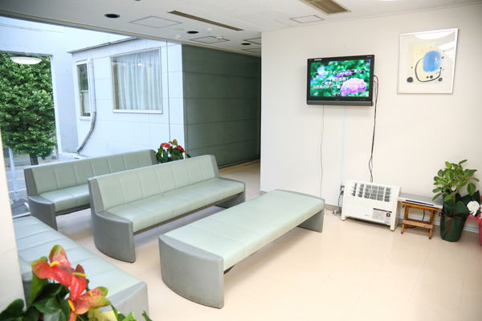
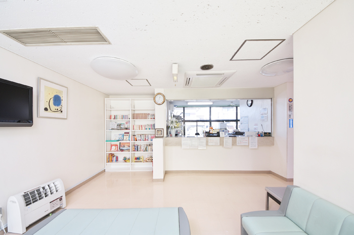
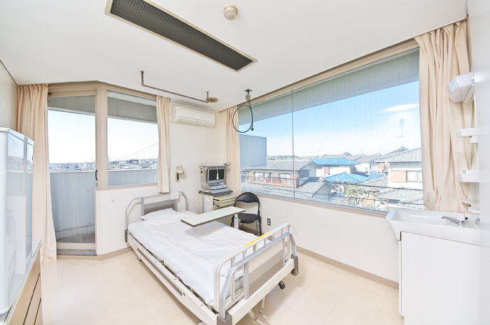

コラム
「病院AI導入には順番がある」— 内科医×エンジニアが示す実装の地図
松尾研AI経営講座を受講した内科医が整理した、病院AI導入の3つのフレームワーク。Cursorversのガバナンス支援との接点を解説します。
詳しく読むAIを導入したい。でも、誰が責任を持ち、どう説明し、運用後に何を監査すればよいかが曖昧になりやすい。
Cursorversは、医療AIの提案書・責任分界・院内説明・運用ルールを、臨床経験のある医師の視点で読み解きます。
医師の臨床レビューとして、医療機関には導入前の判断軸と運用後の監査観点を。
医療AIベンダーには、病院に届く提案の言葉と説明責任の整理、リリース後アップデートの臨床目線での確認を返します。
医療機関向け
患者情報、責任分界、院内ルール、職員教育、利用実態。承認前から運用後レビューまで、確認すべき論点を整理します。
医療AIベンダー向け
病院側が気にする臨床上の違和感、安全性、説明責任、現場負荷を赤入れし、リリース前後の更新が医療機関に伝わる形へ整えます。
約20年
医療現場の運用経験を、AI導入判断に接続します。
製品中立
特定製品を売らない立場で、責任分界と提案内容を確認します。
3つの論点
提案書・責任分界・運用監査を、現場で説明できる形へ整理します。
News & Updates
松尾研AI経営講座を受講した内科医が整理した、病院AI導入の3つのフレームワーク。Cursorversのガバナンス支援との接点を解説します。
詳しく読むGoogleプロダクトを活用した「安心・安全」な医療AI環境の構築を共同で推進します。
詳しく読む院内マニュアルのGL準拠確認とシステム契約チェックを中核に、段階的に対応領域を拡大します。
詳しく読むCursorvers（カーソルバース）は、Cursor（判断点）とvers（turn＝向きを変える）を掛け合わせた造語です。
意味するもの
AI導入の成否は、製品比較より先に「判断点」の設計で決まります。誰が判断し、誰が検証し、問題時に誰が止めるか。責任分界が曖昧なままでは、現場は回っても組織は守れません。
Cursorversの「vers」には、複数の意味を重ねています。Reverse（向け直す）、Version（更新し続ける）、Versus（責任の対峙点を明確にする）、Versatile（現場に合わせて整える）。意思決定のカーソルを正しい位置に置き、導入を「安心と継続」へ変える。それが、Cursorversという名前に込めた意思です。
「verse」には“詩”や流行語の連想が強く、意図がぶれやすいためです。私たちは reverse / version に共通する vers（turn＝向きを変える）を採り、AI導入の判断を正しい方向へ向け直し、運用を更新し続ける意思を名前に込めています。
医療機関には導入判断と監査観点を。医療AIベンダーには病院に届く説明責任の整理を返します。
医療機関向け
責任分界・患者情報・院内説明の抜けを、承認前に第三者の臨床目線で確認します。
ベンダー向け
提案書・責任分界・院内説明を、医療機関の稟議と現場運用の観点で赤入れします。
医療×AIに関するガイドラインは、近年急速に具体化が進んでいます※。 「誰がAIの出力を検証したか」「ルールは文書化されているか」「職員は教育を受けているか」—— これらを問われたとき、説明できる体制はありますか？

AI製品を売る人と、その提案を検証する人が同じでは、医療機関の判断は偏ります。
導入前に、製品中立の第三者が提案を読むことが必要です。
ガイドラインは年々厳格化し、 「誰がAIの出力を検証したか」「ルールは文書化されているか」「職員は教育を受けているか」—— が問われる時代。Cursorversは、提案前・導入前に説明できる論点へ整理します。
専任スタッフを置けない現場でも
安心して運用が続くように設計されたサービスです。
だからこそ、最小構成でAI運用の安全と継続を実現する設計が必要です。
Cursorversは、貴院の規模と体制に合わせた「続けられる運用設計」を提案します。

多くの医療機関で、AI運用は特定の個人に依存しています。
その人が異動すれば、ノウハウも消え、安心が揺らぐ。
Cursorversは、誰が担当しても回る仕組みを作ります。
院内ルール・チェックリスト・研修資料——すべて「引き継げる成果物」として納品します。
大学病院には専門委員会がある。でも、中小病院やクリニックにはAI提案を精査する余力がない。
導入判断の前に、提案書・責任分界・院内説明を読み込み、
追加で確認すべき質問と判断メモを返します。

※ 厚労省「医療情報システムの安全管理に関するガイドライン」第6.0版（2023年5月改定）、経産省・総務省「医療情報を取り扱う情報システム・サービスの提供事業者における安全管理ガイドライン」第2.0版（2022年8月策定）など。
※1 医療DX推進体制整備加算は2024年診療報酬改定で新設。セキュリティ研修、BCP策定、オンライン資格確認等の要件が段階的に追加されています。
AI運用を守る体制づくりをご支援した医療機関様
千葉県千葉市



AIを導入したいが、運用が続くかが不安だった。
Cursorversのおかげで、安心して回る体制が整った。
AI活用は急務だったが、導入後の運用責任や継続体制が見えなかった
提案書レビュー → 想定質問リスト → 導入判断メモ

医療機関に出す前の提案書、導入前に受けたベンダー提案をお聞かせください。
第三者の臨床目線で、先に潰すべき論点を整理します。